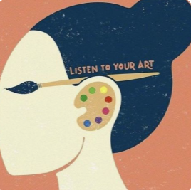
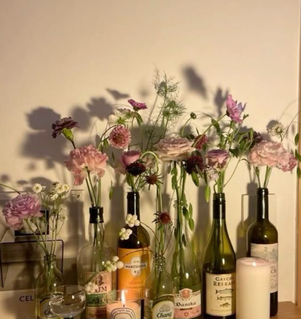
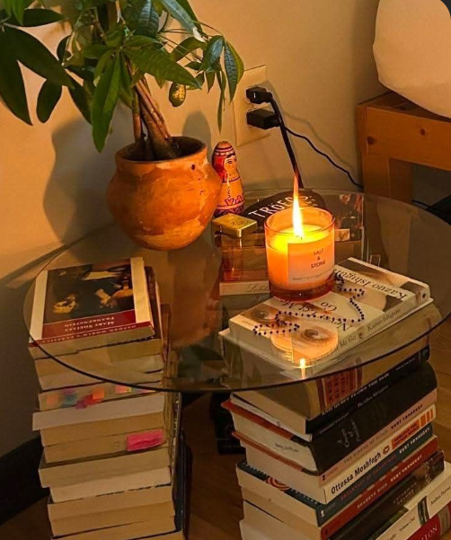
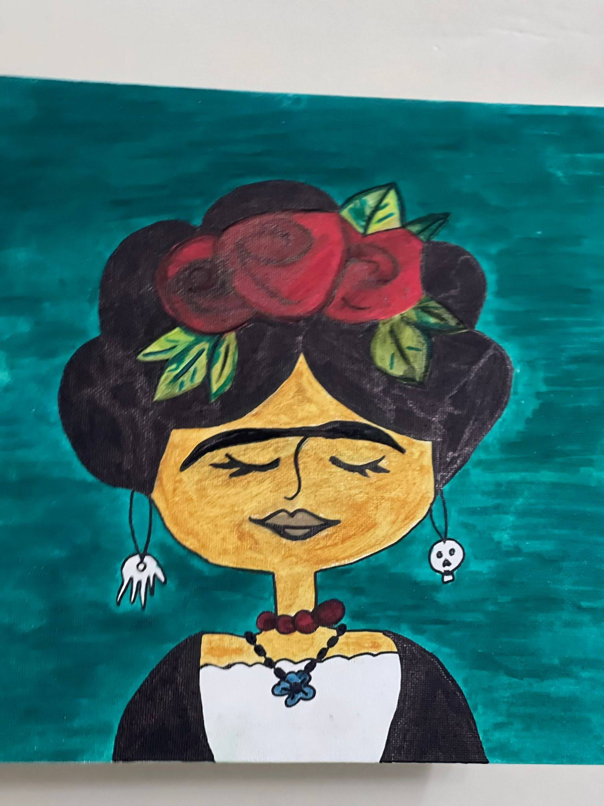
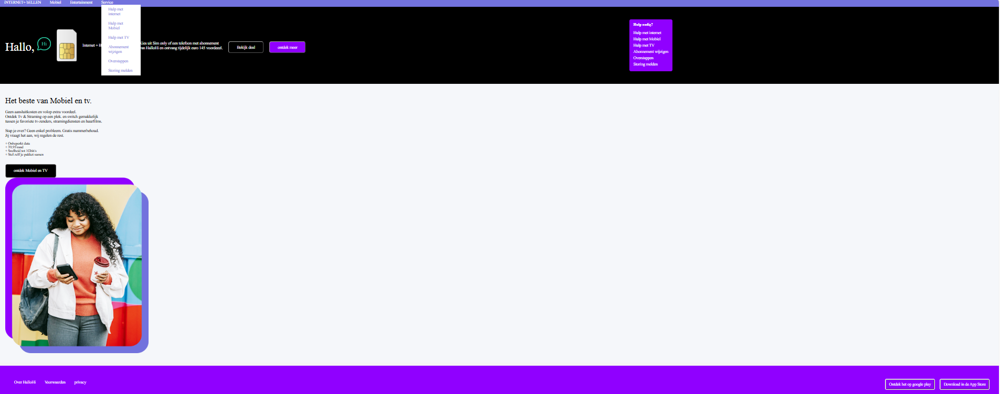
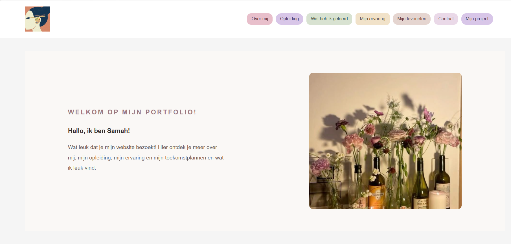
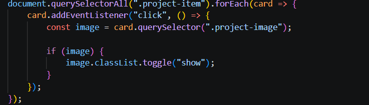

Opleiding
Ik volg momenteel de opleiding Software Developer. Hiervoor heb ik verschillende opleidingen gevolgd, waaronder Retail en ICT. Tijdens deze opleidingen heb ik nieuwe kennis en vaardigheden opgedaan.

WELKOM OP MIJN PORTFOLIO!
Wat leuk dat je mijn website bezoekt! Hier ontdek je meer over mij, mijn opleiding, mijn ervaring, mijn toekomstplannen en mijn interesses.

Ik heet Samah. Ik ben geboren in Syrië en mijn familie komt oorspronkelijk uit Palestina.
Ik vind Nederland een prachtig land. Ik volg de opleiding Software Developer.
Ik vind het leuk om nieuwe dingen te leren en digitale oplossingen te ontwerpen.
Ik wil mijn opleiding afronden en daarna doorstromen naar het hbo om Artificial Intelligence (AI) te studeren. Deze opleiding geeft me een goede basis en helpt me mijn vaardigheden verder te ontwikkelen. Ik leer hier belangrijke vaardigheden die ik later nodig heb. Daarnaast werk ik aan het verbeteren van mijn Nederlands. Ik wil mijn taalniveau verder ontwikkelen, zodat ik de taal steeds beter beheers.
Voor dit interview heb ik mijn klasgenoot May gevraagd naar haar ervaringen met de opleiding Software Developer.
Ik heb eerder een grafische opleiding gedaan. Met deze opleiding wil ik mij verder verdiepen in coderen en websites maken.
Ik vind coderen interessant. Misschien ontdek ik in de toekomst nog andere onderwerpen die ik leuk vind.
Ik vind het soms moeilijk om veel opdrachten en taken tegelijk te maken.
Ik weet het nog niet. Misschien ga ik werken of verder studeren.
Ik vind ontwerpen en coderen het makkelijkst.
Afsluiting
Bedankt May voor het beantwoorden van mijn vragen en het delen van haar ervaringen!

Ik volg momenteel de opleiding Software Developer. Hiervoor heb ik verschillende opleidingen gevolgd, waaronder Retail en ICT. Tijdens deze opleidingen heb ik nieuwe kennis en vaardigheden opgedaan.
Ik heb in Nederland ervaring opgedaan in de retail. Ik hielp klanten, vulde producten aan en zorgde ervoor dat de winkel netjes bleef. Daarnaast heb ik ervaring opgedaan in de horeca en korte tijd in de kinderopvang. Deze ervaringen hebben mij geholpen om mijn Nederlands te verbeteren en mij verder te ontwikkelen. Nu wil ik ook ervaring opdoen in softwareontwikkeling en mijn soft skills verder ontwikkelen.
Nederlands is niet altijd makkelijk voor mij. Daarom vind ik het belangrijk om mijn taalniveau verder te verbeteren.
In mijn vrije tijd kijk ik graag series, lees ik boeken en heb ik interesse in kunst en reizen. Daarnaast vind ik meditatie heel leuk en ontspannend.
Tijdens mijn opleiding Software Developer heb ik verschillende vaardigheden geleerd. Ik wil mij hierin verder ontwikkelen en verdiepen.
Ik kan een webpagina opbouwen met HTML-elementen.
Ik heb geleerd: kleuren, lettertypes, achtergronden en vormen aanpassen.
Ik leer nog hoe ik elementen naast elkaar kan plaatsen en netjes kan uitlijnen.
Ik leer websites aanpassen aan verschillende schermformaten.
| Vaardigheid | Wat wil ik later leren? |
|---|---|
| Programmeertalen | JavaScript, Python en PHP leren programmeren. |
| Databasebeheer | Leren werken met SQL en databases. |
| Front-end development | Interactieve en gebruiksvriendelijke websites ontwikkelen. |
| Back-end development | Leren hoe servers en applicaties werken. |
| Git en GitHub | Code beheren en samenwerken met andere developers. |
| UI/UX Design | Gebruiksvriendelijke websites en applicaties ontwerpen. |
| Artificial Intelligence | Leren werken met AI en Machine Learning. |
| Problem-solving | Programmeerproblemen analyseren en oplossen. |
Mijn favoriete muziekinstrument om naar te luisteren is de piano. Ik vind de pianomuziek van Ludovico Einaudi heel inspirerend.
Mijn favoriete boek is Witte nachten van Fjodor Dostojevski. Ik heb het boek in de Arabische vertaling gelezen.
Mijn favoriete sport is tennis.
Dit lied spreekt me aan omdat het laat zien dat je ondanks moeilijke momenten hoop kunt blijven houden.

Dit is de eerste schets die ik van een schilderij van Frida Kahlo heb gemaakt. Daarom is dit mijn favoriet.
Een website gemaakt met HTML en CSS.

Mijn persoonlijke portfolio met mijn ervaringen en vaardigheden.

We gaan volgende periode JavaScript leren.
